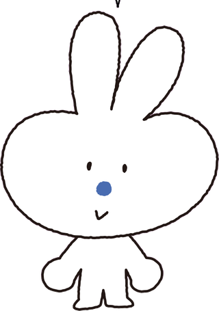
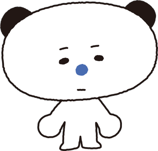
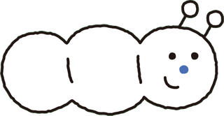

꾸꾸클럽은 학교 너머, 학습의 공간을 확장하며 꿈을 꾸는 학생들의 모임입니다.

나랑 경쟁하는 건 어제의 나.
행운은 준비된 사람의 것!
행운은 준비된 사람의 것!
토꾸미
그야말로 갓생살이. 자기 루틴과 계획을 지킨다.
열심히 듣다가 귀가 길어졌다.
항상 네잎클로버를 부적처럼 지니고 다닌다.
욕심이 많지만 현실적인 타입. 교우관계가 좋다.

해야하니까 그냥 한다.
오늘은 이 정도면 충분해.
오늘은 이 정도면 충분해.
팬꾸미
잠이 많지만 해야 하니까 그냥 한다.
원래 곰인데 다크서클 때문에 팬더처럼 보인다.
그래서 그냥 팬더라고 하고 다닌다.
하기 싫어보이는데, 늘 출석은 하고 과제도 성실하게 해낸다.
무던하고 무덤덤하지만 속이 꽉찬 학생.

조금만 기다려줘!
꾸미
자기만의 속도로 꾸물꾸물 열심히 하는 꾸미.
학교 가는데 30일 걸려서 수업에는 온라인으로 참여한다.